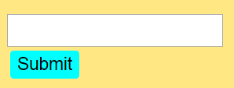

This is a Blog Post for Homework Assignment #2.
This is a Demo for Homework Assignment #2
This is a Repo for Homework Assignment #2
It was pretty difficult for me to think of a good idea for how to implement some javascript stuff on my page. I had the idea that I wanted to use the base website I had made last week and extend it in some meaningful, useful, way. But I never really had a good idea for how to do that, one that really utilized the requirements.
In the end, I finally decided to just do something a little gimmicky. I thought about just adding some riddles that the user could 'solve' on my site. It gave me some ideas for how to use the javascript, plus I figured finding riddles online to use would be fairly easy. I knew that I wanted a system where the user would be able to get hints of some kind, otherwise trying to solve them could just be annoying. So I did some sketches about what I was envisioning.
Having the idea finished made jumping into html quite a bit easier than just staring at a blank screen for hours. So I went ahead and added in the concepts that I was thinking. Other than the basic layout from last week (which I retained), I also added the form stuff to be modified later.
I ended up using a dropdown box, a text input field, and a radio bullet list (as well as a submit button). I figured this covered the range of possible form stuff pretty well. In the beginning, since I wanted to get the base for everything done before I started messing with javascript, I had the two riddles typed out (stolen from the videogame series Professor Layton) and formatted early on, despite my intention for only one to be showing at a time.
Blah
I also went through and added some css stuff to format the new stuff. I wasn't sure on how I wanted stuff to look quite yet, so I had a lot of filler colors and things along those lines for a while.
I start out by deciding which elements will be tackled how. I decide that the hint box makes sense to be one element that is modified by javascript, and that the riddles make sense to be elements that are created at runtime. I end up deciding to start with the hintbox, since that seems the most self contained.
After the hintbox, I (kind of foolishly) decided to work on the riddle switcher next. I'm not sure if there was a more eloquent way to do it, and I ended up doubting how good of an idea it was to break it up like I did. I was hoping that I'd be able to just load in an .html file to avoid the whole 'no linebreaks' problem, but for now, this is the best I got. I found some stuff about a load() function, but I think I would have needed to add ajax in (which makes sense, but isn't what I was looking for).
I (almost) finished up by authenticating submitted answers. Obviously when the main concept of the page is riddles, being able to check if you're right or not is important.
Afterwards I polished things up a little bit, since there was still a lot of ugliness to be eradicated.